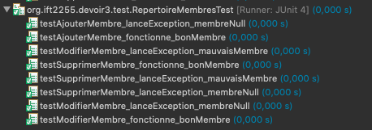
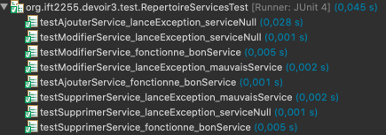
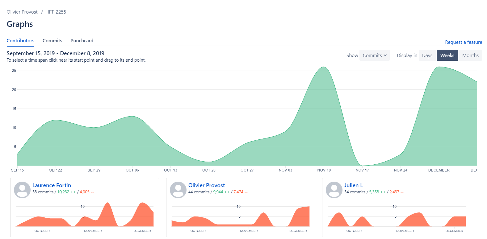

Voici un lien vers le fichier du diagramme.
Nom: Laurence Fortin
Matricule: 20088891
Courriel: laurence.fortin.3@umontreal.ca
Temps mis: 25 heures
Nom: Julien Lanctôt
Matricule: 20140970
Courriel: julien.lanctot@umontreal.ca
Temps mis: 25 heures
Nom: Olivier Provost
Matricule: 20101738
Courriel: olivier.provost.1@umontreal.ca
Temps mis: 25 heures
Soumetteur: Olivier Provost
| Tâche | Laurence | Julien | Olivier |
|---|---|---|---|
| Implémentaion en Java | Implémentation (33%) | Implémentation (33%) | Implémentation (33%) |
| Tests unitaires | Test (20%) | Test (20%) | Test (60%) |
| Livraison et documentaion | JavaDoc (33%) | JavaDoc + ANT (33%) | JavaDoc + Manuel Utilisateur (33%) |
| Mise à Jour des anciens Artéfacts | Conception + Exigences (33%) | Conception (33%) | Conception + Hypothèses (33%) |
Voici un lien vers le fichier JAR du prototype.


Voici un lien vers notre JavaDoc.
Voici un lien vers notre Manuel utilisateur.
Voici un lien vers le fichier du diagramme.
Cas d’utilisation #1 : Inscription d'un non-Utilisateur au #GYM.
But : Un non-Utilisateur veut s'inscrire au #GYM pour avoir accès aux différents Services (Membre) ou pour offrir des Services (Profesionnel).
Acteurs : Non-Utilisateur (principal), Agent à la réception (secondaire).
Scénario principal :
1. non-Utitilisateur se présente à la réception.
2. Agent demande les informations requises pour compléter la demande.
3. Agent inscrit les informations sur l'ordinateur.
4. Agent enregistre les informations dans le Centre de Donnés.
5. Agent fournit le numéro d'Utilisateur unique au nouvel Utilisateur du #GYM.
Scénarios alternatifs :
2.a. non-Utitilisateur ne veut pas partager ses informations :
2.a.1. Agent demande au non-Utilisateur de quitter.
3.a. Erreur dans les informations :
3.a.1. Le scénario reprend à l'étape #2.
Postconditions : non-Utilisateur devient un Utilisateur du #GYM, il y a un nouvel enregistrement dans le Centre des Données sur l'Utilisateur.
Cas d’utilisation #2 : Validation d'un numéro d'Utilisateur au #GYM.
But : Un Utilisateur veut valider son numéro pour avoir accès au #GYM et ses Services.
Préconditions : L'Utilisateur doit avoir son numéro d'Utilisateur.
Acteurs : Utilisateur (principal), Agent à la réception (secondaire).
Scénario principal :
1. Utilisateur se présente à la réception avec son numéro d'Utilisateur.
2. Agent vérifie la validité du numéro d'Utilisateur.
3. Le numéro est validé, le mot validé est affiché sur l’écran.
4. Agent permet l’accès au #GYM à l'Utilisateur.
Scénarios alternatifs :
2.a. Le numéro est invalide (introuvable) :
2.a.1. La raison de l’invalidité est affichée sur l’écran.
2.a.2. Agent demande à nouveau le numéro d'Utilisateur.
2.a.3. Le scénario reprend à l'étape #2.
2.b. Le numéro est invalide (Utilisateur suspendu) :
2.b.1. La raison de l’invalidité est affichée sur l’écran.
2.b.2. Agent demande à l'Utilisateur de quitter.
Postconditions : Utilisateur peut accéder aux différents Services du #GYM.
Cas d’utilisation #3 : Mettre à jour un Utilisateur.
But : Un Utilisateur veut changer les informations de son compte.
Préconditions : L'Utilisateur doit être inscrit au #GYM. Le numéro d'Utilisateur a préalablement été validé.
Acteurs : Utilisateur (principal), Agent à la réception (secondaire).
Scénario principal :
1. Utilisateur est à la réception et veut modifier les informations de son compte.
2. Agent demande quelles informations l'Utilisateur veut modifier.
3. Agent modifie les informations dans du compte Utilisateur.
4. Agent enregistre les informations dans le Centre de Donnés.
Postconditions : Les informations de l'Utilisateur sont modifiées dans le Centre des Données.
Cas d’utilisation #4 : Supprimer un Utilisateur.
But : Un Utilisateur veut supprimer son inscription au #GYM.
Préconditions : L'Utilisateur doit être inscrit au #GYM. Le numéro d'Utilisateur a préalablement été validé.
Acteurs : Utilisateur (principal), Agent à la réception (secondaire).
Scénario principal :
1. Utilisateur est à la réception et veut supprimer son inscription.
2. Agent supprime l'inscription de l'Utilisateur du Centre de Données.
3. Agent confirme la suppression à l'Utilisateur.
Postconditions : Utilisateur n'est plus inscrit au #GYM.
Cas d’utilisation #5 : Inscription à un Service.
But : Un Utilisateur veut s’inscrire à un Service.
Préconditions : L'Utilisateur doit être inscrit au #GYM. Le numéro d'Utilisateur a préalablement été validé. Au moins un Profesionnel a
préalablement offert un Service. Il y a au moins un Service qui n'est pas à capacité maximal.
Acteurs : Utilisateur (principal), Agent à la réception (secondaire)
Scénario principal :
1. Utilisateur est à la réception et veut s'inscrire à un Service.
2. Agent consulte le Répertoire des Services à l'aide du Cas d'Utilisation #7
3. Agent sélectionne la Séance du Service demandée par l'Utilisateur.
4. Agent enregistre l'inscription dans le Centre de Données.
5. Agent confirme l’inscription à l'Utilisateur.
Scénarios alternatifs :
3.a. Le Service est à capacité maximale :
3.a.1. Le scénario reprend à l'étape #2.
3.b. Aucun Service offert n'intéresse l'Utilisateur :
3.b.1. Fin du scénario.
Postconditions : Utilisateur est inscrit au Service, il y a un nouvel enregistrement dans le Centre des Données sur l'inscription.
Cas d’utilisation #6 : Participation à un Service.
But : Un Utilisateur veut confirmer sa participation à un Service.
Préconditions : L'Utilisateur doit être inscrit au #GYM et un Agent doit être disponible à
la réception. Le numéro d'Utilisateur a préalablement été validé. L'Utilisateur doit avoir
être préalablement inscrit à un Service.
Acteurs : Utilisateur (principal), Agent à la réception (secondaire).
Scénario principal :
1. Utilisateur est à la réception et veut confirmer sa participation à un Service.
2. Agent consulte le Répertoire des Services à l'aide du Cas d'Utilisation #7
3. Agent sélectionne la Séance du Service demandée par l'Utilisateur.
4. Agent enregistre la participation dans le Centre de Données.
5. Agent confirme la participation à l'Utilisateur.
Scénarios alternatifs :
2.a. Utilisateur est inscrit à aucune Séance d'un Service :
2.a.1. Agent explique à l'Utilisateur qu'il doit s'inscrire à un Service avant de pouvoir y participer.
2.a.2. Fin du scénario
Postconditions : Utilisateur participe à la Séance du Service, il y a un nouvel enregistrement dans le Centre des Données sur la participation.
Cas d’utilisation #7 : Consulter le Répertoire des Services.
But : Un Utilisateur veut consulter les Services du répetoire.
Préconditions : L'Utilisateur doit être inscrit au #GYM et un Agent doit être disponible à
la réception. Le numéro d'Utilisateur a préalablement été validé. L'Utilisateur veut s'inscire ou participer à un Service.
Acteurs : Utilisateur (principal), Agent à la réception (secondaire).
Scénario principal :
1. Agent consulte le répertoire des Services.
2. Agent montre à L'Utilisateur les Services disponibles, la journée même
Postconditions :
Cas d’utilisation #8 : Offrir un Service.
But : Un Utilisateur veut offrir un Service.
Préconditions : L'Utilisateur est préalablement inscrit au #GYM en tant que Profesionnel. Le numéro d'Utilisateur a préalablement été validé.
Acteurs : Profesionnel (principal), Agent à la réception (secondaire)
Scénario principal :
1. Utilisateur est à la réception et souhaite offrir un nouveau Service.
2. Agent demande les informations requises pour compléter la demande.
3. Agent inscrit les informations sur l'ordinateur.
5. Agent enregistre les informations dans le Centre de Donnés.
4. Agent fournit le Code de Service unique à l'Utilisateur et confirme sa création.
Scénarios alternatifs :
2.a. Utitilisateur ne donne pas les informations nécessaires :
2.a.1. Fin du scénario.
3.a. Erreur dans les informations :
3.a.1. Le scénario reprend à l'étape #2.
Postconditions : Utilisateur offre maintenant un nouveau Service, et d'autres Utilisateurs peuvent maintenant s'y inscrire, il y a un nouvel enregistrement dans le Centre des Données sur le Service.
Cas d’utilisation #9 : Consulter les inscriptions à un Service.
But : Un Utilisateur veut voir les inscriptions à ses Services.
Préconditions : L'Utilisateur est préalablement inscrit au #GYM en tant que Profesionnel. Le numéro d'Utilisateur a préalablement été validé. L'Utilisateur a au moins un Service d'enregistré dans le Centre des Données.
Acteurs : Professionnel (principal), Agent à la réception (secondaire).
Scénario principal :
1. Professionnel est à la réception et demande de consulter les inscriptions à ses Services.
2. Agent utilise le Répertoire pour trouver la Séance liée au Service.
3. Agent montre les inscriptions au Service à l'Utilisateur.
Scénarios alternatifs :
2.a. Professionnel n'offre aucun Service :
2.a.1. Agent explique au professionnel qu'il n'offre présentement aucun service.
2.a.2. Fin du scénario
Postconditions : Le professionnel obtient une liste des inscriptions au Service demandé.
Cas d’utilisation #10 : Mettre à jour un Service.
But : Un Utilisateur veut changer les informations d'un de ses Services.
Préconditions : L'Utilisateur est préalablement inscrit au #GYM en tant que Profesionnel. Le numéro d'Utilisateur a préalablement été validé. L'Utilisateur a au moins un Service d'enregistré dans le Centre des Données.
Acteurs : Utilisateur (principal), Agent à la réception (secondaire).
Scénario principal :
1. Utilisateur est à la réception et veut modifier les informations de son Service.
2. Agent utilise le Répertoire pour trouver le Service.
3. Agent demande qu'elles informations le professionnel veut modifier.
4. Agent modifie les informations du Service.
5. Agent enregistre les informations dans le Centre de Donnés.
Postconditions : Les informations du Service sont modifiées dans le Centre des Données. Les Utilisateurs inscrits seront avisés des modifications dès leur prochaine visite au #GYM.
Cas d’utilisation #11 : Supprimer un Service.
But : Un Utilisateur veut supprimer un Service.
Préconditions : L'Utilisateur est préalablement inscrit au #GYM en tant que Profesionnel. Le numéro d'Utilisateur a préalablement été validé. L'Utilisateur a au moins un Service d'enregistré dans le Centre des Données.
Acteurs : Utilisateur (principal), Agent à la réception (secondaire).
Scénario principal :
1. Utilisateur est à la réception et veut supprimer son Service.
2. Agent utilise le Répertoire pour trouver le Service.
3. Agent confirme la suppression à l'Utilisateur.
Postconditions : Le Service est supprimé du Centre des Données. Les membres qui étaient inscrits seront avisés que le Service est annulé dès leur prochaine visite au #GYM.
Cas d’utilisation #12 : Générer procédure comptable.
But : On veut connaître le montant des frais de services engendrés par les Professionnels durant la dernière semaine.
Préconditions : Il y a eu au moins un Service de donné durant la dernière semaine.
Acteurs : Gestionnaire (principal), Système (secondaire).
Scénario principal :
1. Il est vendredi minuit, la procédure comptable est lancée automatiquement par le Système.
2. Le rapport du Gestionnaire et les TEFs sont générés et écris sur le disque.
Scénarios alternatifs :
1.a. Le Gestionnaire lance la procédure comptable.
1.a.1. Un rapport est créé avec les informations nécessaires sur le disque.
Postconditions : Le rapport est enregistré sur le disque.

Voici un lien vers le fichier vpp du diagramme.

Voici un lien vers le fichier vpp du diagramme.

Voici un lien vers le fichier vpp du diagramme.

Voici un lien vers le fichier vpp du diagramme.

Voici un lien vers le fichier vpp du diagramme.

Voici un lien vers le fichier vpp du diagramme.

Voici un lien vers le fichier vpp du diagramme.

Voici un lien vers le fichier vpp du diagramme.

Voici un lien vers le fichier vpp du diagramme.

Voici un lien vers le fichier vpp du diagramme.

Voici un lien vers le fichier vpp du diagramme.

Voici un lien vers le fichier vpp du diagramme.
